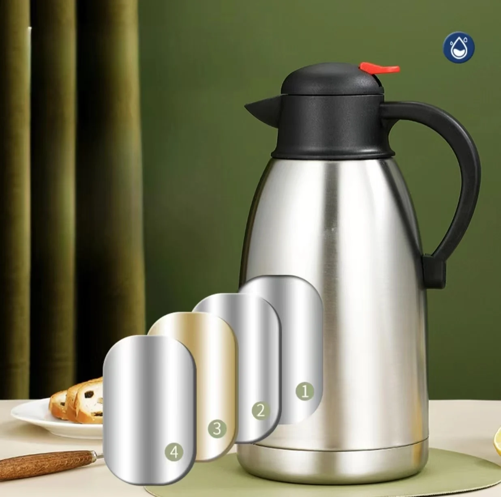

In this playbook
Search behavior in B2B often starts with a noun, not a product code. A purchaser new to insulated drinkware asks what a vacuum flask is, what LFGB testing covers, or what MOQ means in a quotation. Answer engines compress those questions into a short response and attach a source. A manufacturer with a precise, factual definition on its own site has a realistic chance of being that source — and of being remembered when the same buyer later needs a supplier.
1. Why "what is" queries matter to a factory
Definition queries sit at the top of the buying journey. They carry little immediate purchase intent, which is exactly why most suppliers ignore them. The buyer who asks "what is double-wall stainless steel?" today is the buyer who compares factories next month. If your site supplied the answer the first time, you are already a familiar name in a category where most suppliers look interchangeable.
There is a second advantage. Definition pages are unusually easy to make genuinely useful for a manufacturer. You build the product, you run the tests, and you know the difference between a marketing claim and a technical fact. That first-hand knowledge is the raw material of a citable answer, and it is something a general content site cannot fake without effort.
The caveat is important: a definition page is not a product page with a glossary label. If the first paragraph is a sales pitch, the passage is not a clean answer and will not be quoted as one. Write the definition for the person who understands nothing, then give the interested reader a clear next step.

2. Four types of definition page
Not all definitions do the same job. Choose the type that matches the term and the page you want to link to.
| Page type | Example term | What the reader wants | Natural next link |
|---|---|---|---|
| Product term | Vacuum flask | What the object is and how it works | Product category page |
| Process term | Powder coating | What the factory actually does | Decoration or process guide |
| Standard or compliance term | LFGB food-contact testing | What the certificate means and where it applies | Compliance guide or certificate file |
| Commercial term | Minimum order quantity | How suppliers use the term in a quote | MOQ and lead-time guide |
For a drinkware supplier, product terms win attention, but compliance and commercial terms often win trust. They are also less crowded. A page explaining what a food-contact declaration covers, written by the factory that supplies one, is more credible than a generic dictionary entry.
3. The five blocks of a citable definition
A definition page that gets quoted has a predictable shape. Each block serves a different reader or retrieval system, and removing any one of them weakens the result.
- Question headline. Use the phrase a buyer would type: "What is a vacuum flask?" rather than "Our vacuum technology".
- Answer-first paragraph. Roughly 60–80 words that define the term directly, with no preamble. This is the passage most likely to be extracted, so make it true on its own.
- Fact table. Two to five rows of concrete attributes — material, temperature range, typical use, applicable standard. Tables are easy for both people and machines to parse.
- Boundaries and exceptions. What the term does not cover, where it is often misused, and how it differs from an adjacent term. This is where first-hand expertise shows.
- Source and next step. Name the manufacturer, link to the related product or deeper guide, and show when the page was last reviewed.
Keep the answer self-contained. Avoid sentences like "as mentioned above" or "this type", because an extracted passage loses its reference. Repeat the term instead of a pronoun. It reads slightly less elegant and performs considerably better when a system pulls one paragraph out of context.

4. A term shortlist for drinkware suppliers
Do not try to define an entire industry at once. Start with the ten terms buyers most often ask your sales team about, and write one page for each. The shortlist below is a practical starting point for a bottle and tumbler manufacturer.
| Term to define | Why buyers ask | Where it leads |
|---|---|---|
| Vacuum insulation | To judge whether a "thermal" claim is real | Vacuum performance guide |
| 304 vs 316 stainless steel | To decide whether a premium is justified | Steel grade comparison |
| LFGB / FDA food contact | To clear a regulated market | Compliance checklist |
| Minimum order quantity | To plan a first order and budget | MOQ negotiation guide |
| AQL inspection | To write a workable QC clause | AQL checklist |
| Lid types (straw, slide, flip) | To match a product to a sales channel | Lid comparison guide |
Each of these terms already has a deeper guide somewhere on a mature B2B site. The definition page does not replace that guide; it gives a short, quotable answer and passes the reader along. That internal link is also what turns a stray citation into a visit to the rest of your catalog.
Want the technical facts behind a definition, straight from the factory?
If you are writing a buying guide, catalog or specification and need accurate data on drinkware construction, materials or compliance, send us the terms you are covering. We will share the factual detail we use in our own technical sheets.
5. Glossary hub versus standalone pages
Both, and the relationship between them matters. One page per term gives each answer its own URL, its own headline and its own chance of being retrieved as a passage. A glossary hub gives crawlers a shallow route to every term and gives readers a way to browse the vocabulary of a category. Put the hub one click from the homepage or main navigation, not four levels deep.
The linking pattern should be simple and consistent. Each term page links up to the hub, sideways to one adjacent term, and forward to one product or deep-dive guide. The hub links to every term with a one-line description — an accurate summary, not a teaser. Avoid linking every term to every other term; a page with fifty links is not more authoritative than one with three relevant ones.
As the set grows, this structure creates a useful side effect: the site starts to look like a reference source for the category rather than a catalog with a blog attached. That is the kind of signal that makes a brand name easier to associate with a topic in an answer engine.

6. Schema, discovery files and internal links
Structured data does not create a citation by itself, but it reduces ambiguity. DefinedTerm or DefinedTermSet is the natural vocabulary for a glossary; FAQPage suits the question-and-answer block; BreadcrumbList shows where the page sits in the site hierarchy. Mark up only what a reader can see on the page, and keep the JSON-LD consistent with the visible text.
Discovery is equally ordinary. Make sure definition pages are present in sitemap.xml with a sensible priority and change frequency, and add the most useful ones to llms.txt with a one-line description of what the page answers. Keep the facts in server-rendered HTML: if a crawler has to run JavaScript to discover the definition, you have introduced a needless failure point. A visible "last reviewed" date and a maintained dateModified value help readers and systems judge whether the information is current.
Use consistent naming for the manufacturer across every page. The same legal entity name, the same factory description, and the same contact route on a definition page, a product page and llms.txt make it easier to connect the pages into one recognizable source. Inconsistent naming is one of the quiet reasons a site publishes good material and still never gets associated with the topic.
7. Measurement, mistakes and a 30-day pilot
Track a small, fixed prompt set rather than chasing traffic alone. Pick ten questions a buyer would actually ask, run them monthly in the answer engines you care about, and record whether your brand or your URL appears. Also monitor crawler activity in server logs and watch for referral traffic from answer engines. Progress is usually gradual: a definition gets quoted first, a brand mention follows, and a visit comes later.
The recurring mistakes are easy to spot. Defining five terms on one page dilutes each answer. Writing from a thesaurus instead of from the factory floor produces definitions that are technically empty. Hiding the answer behind an accordion or a script removes the passage you wanted quoted. Letting standards references go stale destroys trust. And linking every definition straight to a sales page changes the tone of the whole reference section.
A 30-day pilot is enough to test the approach: pick five terms, publish one page per term plus a hub, wire up schema and discovery files, then measure the same prompt set at day one and day thirty. Our own site follows this pattern across a 167+ model catalog — definitions lead to category guides, category guides lead to specifications, and specifications lead to an itemized quote. A buyer who arrives through a definition already knows that the supplier understands the terminology.
8. FAQ
Why should a manufacturer publish definition pages?
Definition queries are how buyers enter a technical category. A clear, factual answer on your own site gives AI answer engines something precise to quote and gives the buyer a reason to visit a supplier who understands the terminology. It is a low-competition way to build topical authority before the buyer is ready to request a quote.
How long should an answer-first definition be?
A practical target is roughly 60–80 words that answer the question directly in the first paragraph, followed by a fact table, boundaries or exceptions, and a link to the relevant product or process page. This is a working guideline, not a rule imposed by any search engine.
Do I need a glossary hub as well as standalone pages?
Usually yes. One page per term keeps each answer retrievable as its own passage, while a glossary hub gives crawlers and readers a route to all of them. Link from every term page back to the hub and to one closely related product or guide page.
Which schema should definition pages use?
DefinedTerm or DefinedTermSet is the natural fit for a glossary, with FAQPage for the question-and-answer block and BreadcrumbList for the hierarchy. Mark up only content that is visible on the page, and make sure the facts are present in server-rendered HTML so crawlers do not need JavaScript to read them.
Looking for a supplier who speaks the language?
Send us your product type, target market and quantity. We will reply with a model-by-model quote, technical specification and the compliance documentation to back it — sample development in 5–7 days, production in 25–35 days.